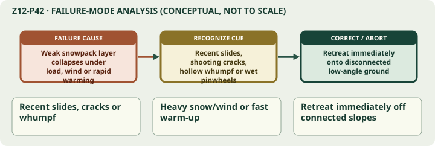

Z12-P42 · Extreme environments · New manuscript
Recognize red-flag snowpack signs: recent slides, cracking and hollow whumpfing
Spot unmistakable live snowpack instability cues immediately and back away to safe low-angle ground.
When it applies · Winter and spring travel anywhere near snow-covered hills, bluffs or mountain slopes.
Equipment · Visual and auditory terrain awareness plus pre-trip avalanche forecast.

Actions
- Treat five classic red flags as immediate alarms of unstable snow: (1) recent avalanche debris on nearby slopes, (2) shooting cracks racing outward from skis/boots, (3) loud hollow "whumpfing" collapses underfoot.[E23]
- Watch for the other two major red flags: (4) rapid heavy new snowfall, rain-on-snow or strong drifting winds loading leeward slopes, and (5) rapid daytime warming or wet rollerballs/pinwheels rolling down steep faces.[E23, E25]
- Recognize that a single "whumpf" on a flat meadow proves a weak layer just collapsed underneath—if connected to a steeper slope above, it can trigger a slide remotely from below.[E23]
Failure recognition · Hearing a hollow whumpf and seeing cracks shoot out from snowshoes, then shrugging and stepping onto the steeper slope ahead.[E23]
Verify · Pause immediately upon seeing ANY red flag and re-verify that your route stays completely disconnected from steep overhead snow.[E23, ED]
Stop or change course · Any observed avalanche red flag triggers immediate retreat onto low-angle disconnected terrain—never "test" a suspicious slope by jumping on it.[E23]
Evidence and editorial notes
- E23 · National Avalanche Center / USFS · Avalanche Encyclopedia (current web edition)
- Section: Avalanche Encyclopedia > Terrain, Slopes, and Runout Zones · Conditions: Winter travel and camping in snowy sloped or mountain terrain
Support: Avalanches can initiate on slopes roughly 30 to 45 degrees and travel far into flatter runout zones below; avoid camping beneath steep snow slopes, cornices, or gullies without formal avalanche training and current forecasts.
Limitations: Gentle flat valley floors can still sit inside runout paths beneath steeper upper slopes. · Conflicting evidence: None; strictly excludes unvalidated snow-shelter placement in avalanche terrain.
Editorial note: Enforces avalanche-terrain exclusion on all winter shelter cards. · Specialist reviewer: Avalanche safety and winter shelter
Primary source · checked 2026-11-24 - E25 · FEMA / Ready.gov · Winter Weather (current web edition)
- Section: Winter Weather > Stay Safe During Winter Storms · Conditions: Extreme cold, drifting snow, and power or travel disruption
Support: Prepare layered clothing, emergency shelter/heat alternatives, and vehicle winter kits; stay indoors during blizzards, protect against frostbite/hypothermia, and keep exhaust vents and exits clear of drifting snow.
Limitations: Drifting snow can block tent vents, doors, and vehicle tailpipes silently overnight. · Conflicting evidence: None; reinforces overnight exit/vent clearance checks.
Editorial note: Supports snow-drift exit maintenance and winter shelter failure recognition. · Specialist reviewer: Cold-weather shelter and emergency management
Primary source · checked 2026-11-24
Source lineage · National Avalanche Center encyclopedia; new manuscript · Classification · New manuscript.